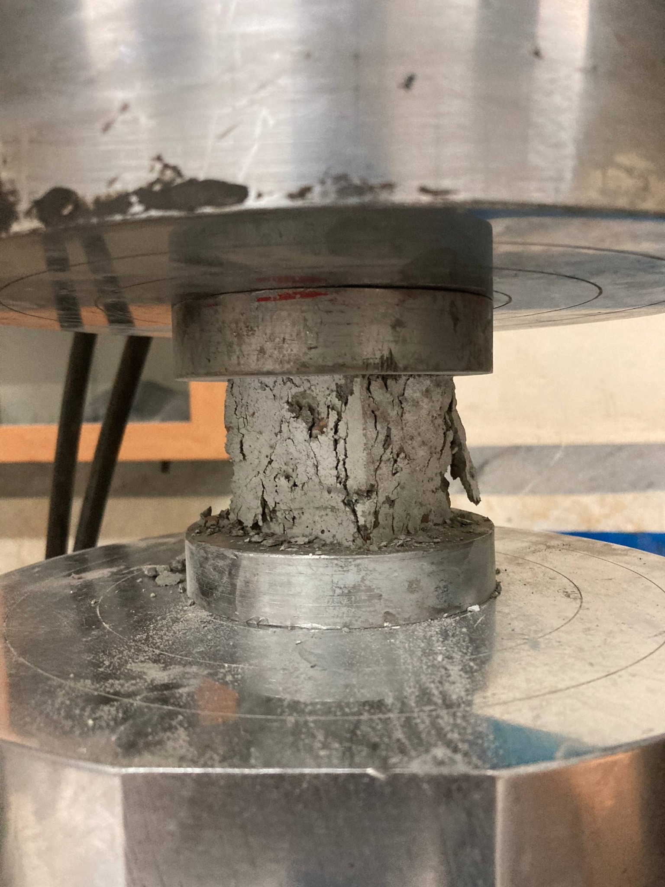
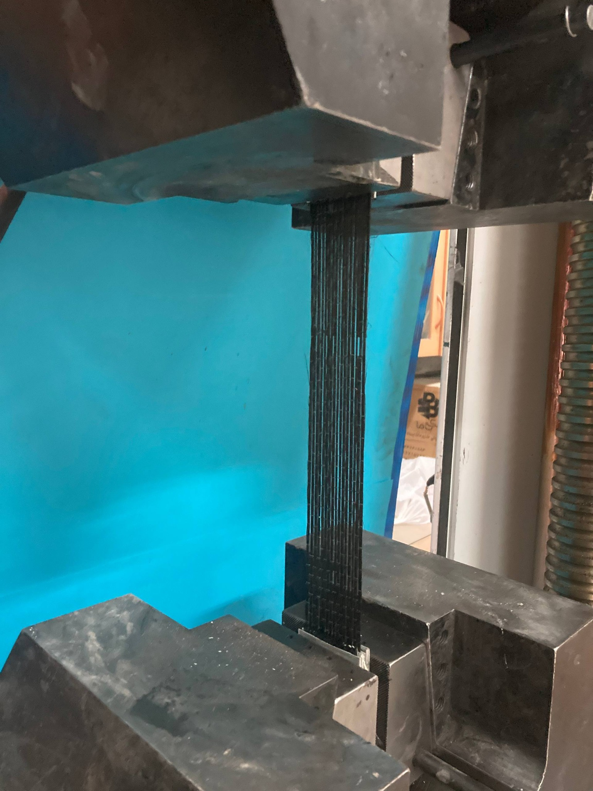
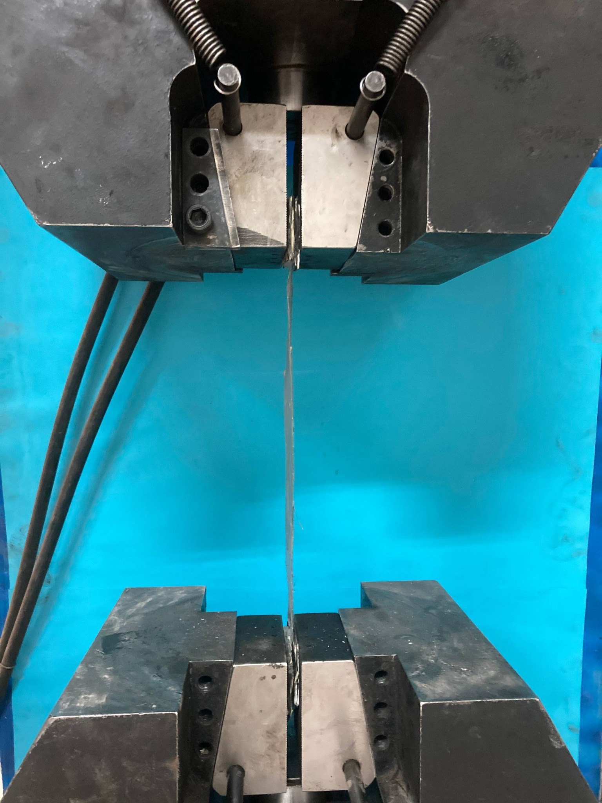

M.Sc. · Smart Building Engineering
GPA: 17.52 / 20 · Iranian grading scale, maximum 20.
Education · Teaching · Laboratory methods
My academic background combines civil engineering, smart building materials, teaching and experimental concrete research.
Download CV ↓GPA: 17.52 / 20 · Iranian grading scale, maximum 20.
Supports graduate students with course materials, assignments and technical questions. Assists with problem-solving sessions, grading assignments and exams, and academic guidance.
Teaches high school mathematics through structured lessons and problem-solving. Prepares exercises and learning materials, assesses student progress and provides individual support.
ETABS · AutoCAD
Mock IELTS: 7.0
Hands-on materials testing
My experimental experience includes ultrasonic testing, compressive and tensile strength testing, scanning electron microscopy (SEM), X-ray diffraction (XRD), and coating and saturation of lightweight aggregates.



Supported site supervision, construction planning and technical documentation.
Edited Persian-language books and reviewed translations for accuracy and readability.